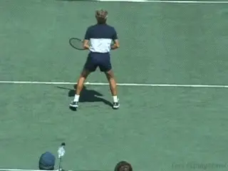
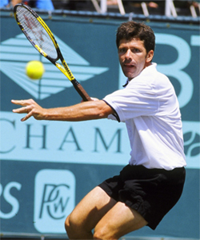
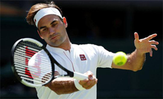
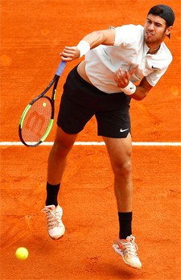
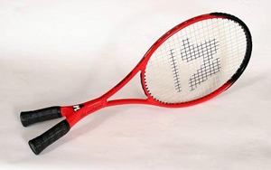
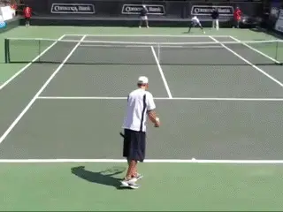
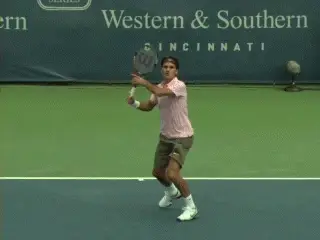
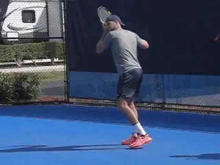
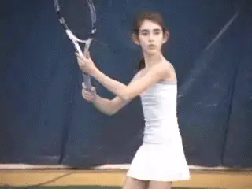

Previous: Forward Swing | 🏠 Classic Lessons Home | Next: Future Trends in Tennis - Part 2
Future trends in tennis part 1
Comprehensive unified tennis knowledge base — Fundamentals, Stroke Analysis, Reference Library, and more
Future Trends in Tennis:Part 1
Chris Lewit
This new series of articles are thought experiments about the future of tennis--where the sport could be headed, at the club and competitive professional level, in the teaching and coaching realm, and even in the more distance future with the evolution of machine intelligence. Let's start in this first article by discussing the evolution of players.

Bjorn Borg: a genius who anticipated the future.
If coaches can predict the next evolutions, they can be on the cutting edge in player development, building players with advanced skills who can compete better in the present era. Players can then buy into this foresight, developing and practicing skills that will give them a competitive edge in the future.
Anticipation of Future Technique
Imagine, for example, having an impenetrable two-handed backhand, a heavy topspin forehand, and the fitness level of Rafael Nadal—not now but back in the 1970's. That was the game of Bjorn Borg, a genius who had technique that anticipated the future of tennis. He was a player ahead of his time.
In the 1980s, players like Jimmy Arias and Sergi Bruguera continued this anticipatory trend with forehands that were decades ahead of their time. The point is that the spoils go to the players and coaches who can predict future trends and train those skills before others either see the trend or admit there is a trend in that direction.

The Arias forehand became the Bollettieri forehand.
An example from Nick Bollettieri illustrates my point. Jimmy Arias arrived at the Academy from upstate New York in 1977.
While Bollettieri was housing most students at a nearby motel, he put up Arias, the national 14's champion, at his home on Longboat Key. When little Jimmy leaped up to smack the full-cut forehand that his father, Antonio, had taught him, Bollettieri saw the future flash before his eyes.
According to Nick, "He shocked us all by jumping off the ground, throwing his full body into his forehand and wrapping his shoulder around on his follow-through," Bollettieri said of Arias. "Add to this his "weird" strong semi western grip and you get a preview of today's game."
Antonio's invention soon belonged to Nick.
"I called my staff over and said, 'Here's the new Bollettieri forehand. My other juniors started to imitate Jimmy's forehand, and it became the signature stroke of the Academy. I believe that it revolutionized tennis and that Jimmy Arias deserves credit for initiating the power game."
To see Jimmy Arias hit that forehand tell his version of the story, exclusively on Tennisplayer, Click Here.
Spain
Lluis Bruguera allowed his son to develop his heavy game in face of conventional nay sayers.
The same phenomenon occurred contemporaneously in Spain in the 1980's when Lluis Bruguera allowed his son Sergi to play with heavy spin and a similar semi-western grip to Arias. Many coaches at the time told Lluis he would destroy his son, but Bruguera saw the future and let Sergi play as he wished.
Prescient coaches like Bollettieri and Bruguera achieved legendary status by identifying and teaching future trends before everyone else did.
The bottom line is that tennis is constantly evolving. Some coaches teach the game of the past. Better coaches teach today's modern game. Superior coaches identify and teach the game of the future.
Breaking Age Barriers
I believe the phenomenon of tennis players continuing to play successfully into their 30's and even 40's will continue and may become the norm. It was not long ago that 30 was consider the accepted retirement age on the pro tours. That is changing rapidly.
With better sports medicine and health care and improved recovery modalities, players are able to compete at a high level and sustain longer careers. We may even see players competing well into their 40's in singles as many top doubles specialists do already. Recreational players will also benefit and will enjoy the game longer with fewer injuries and a higher level of play as they age.

Will we see Roger Federer competing into his 40s?
Bigger and Taller
Players on both tours are getting taller and carrying more muscle, and there is a huge emphasis on physical conditioning. This trend should continue throughout the next century and beyond.
Larger athletes have the capability to transcend the dimensions of the tennis court, whose original designers probably didn't anticipate very tall athletes like John Isner and Ivo Karlovic playing the sport.
Expect to see more basketball size players 6'6" and above for men and over 6' for women. This size player may become the rule rather than the exception. This could also help revive the serve and volley game as discussed below.
Double-Handed and Dual Forehand Players

Expect to see more 6'6" and taller players, like Karen Khachanov.
Double-handed players have always been part of the game and in the future there will likely be more double-handed players on the tour.
Double-handed strokes will help create pace and to handle the pace of the future game, continue to create angles, while creating less muscular imbalance in the body, which can lead to injuries.
While reach is slightly limited with two hands, players can overcome this by learning one handed shots when on the run. "Ambi-players" may also innovate by choosing or demanding new racquet designs such as the natural line of rackets, (Click Here) or other new designs yet to be invented, that enhance their games.
While there will likely always be some athletes whose laterality predisposes them to playing with one arm (forehand and one-handed backhand), this stroke combination may become less common on tour.
Another interesting possibility is that some ambi-players will innovate by choosing a two forehand style, in the vein of Eugenia Koulikovskaya, a former WTA pro, and one of the few professional players to ever play with two single arm forehands.
That could be another configuration that gains popularity in the next century and beyond, especially if sport scientists can teach how to enhance laterality and ambidexterity.
Serving Style and Technique
Tennis fans may remember Luke Jensen, who won the 1993 French Open doubles title, known as "dual hand Luke" for his ability to serve at the pro level both lefty and righty. It is incredibly rare to be wired this way, but if laterality can be enhanced, dual-handed serving could become more common than it has ever been. Training dual hand servers would have to start at a very young age and take place in combination with laterality training to enhance ambidexterity.

How could new racket designs like this one affect the game?
Running and Jumping Servers
The only pro level running-jump server that I know of is Brian Battistone, who reached top 100 in the world on the doubles circuit in 2010.
Battistone is a very innovative player who also plays with a high degree of ambidexterity on his groundstrokes (and a double handled racket). In many ways, he demonstrates some of the potential techniques players of the future might play if they had better laterality training.
Future players and coaches might build off the Battistone innovations to create new strokes mechanics such as an improved running-jump serve. For example, if a very athletic 6'6" to 6'10" athlete learned a running jump serve, he could conceivably jump 5-6 feet into the court and be on top of the service line in one bound and a step, making the serve and volley strategy very attractive.

Could Brian Battistone's serve motion be something more than an anomaly?
This player would also have tremendous angle down into the box, improving serve accuracy and consistency. Imagine an ambidextrous athletic guy with a big vertical leap, the size of Isner, double-handed strokes, running lefty and righty jump server with a penchant for serve and volley—and many other stroke and authentic combinations off of these themes. If coaches figure out how to build this type of player, or a player figures it out on his or her own, others will follow.
Return of Serve and Volley
It is a contrarian viewpoint, but if players are getting taller and more athletic like basketball players, the serve and volley strategy may become more common again. It will take a very explosive, tall athlete with long arms and quick reactions to blanket the net and neutralize the speed and effectiveness of today's return and passing shot game.
John Yandell is on record saying that he thinks the return of serve and volley could also include a higher percentage of swinging volleys that will allow players to create more pressure and hit more volley winners. If the tours ever choose to speed up the tournament court surfaces again in the future, that could also help accelerate the return of the serve and volley.

The return of serve and volley might include a high percentage of swinging volleys.
New Grip Structures
Double-handed players will likely choose the grip structure that saves them the most time, which is the two-handed forehand, two-handed backhand grip with no shifting of the hands a la Fabrice Santoro, Jan-Michael Gambill and Monica Seles.
Others may opt for the two double-handed backhand grip structure with prominent hand shift like legend Gene Mayer and current WTA player Suwei Hsieh, for example.
Another grip structure that is becoming more prevalent on tour is the semi-western backhand grip/semi-western forehand combination. With this grip structure the grip actually doesn't need to be shifted much, if at all, and the player hits the ball off the same side of the racquet face for both forehand and backhand. This eliminates the time cost of a grip change in other traditional grip structures, and is an advantage in particularly time critical situations like the return of serve.
Former ATP pros Thomas Muster, Guga Kuerten, and current American pro Jack Sock exemplify this style of grip. Sock's variation is the two-handed backhand variety. But one-handers are gravitating to this grip structure more and more as they seek a grip structure that can help them mitigate the effects of high balls above the shoulder and also help them generate more topspin.

How about a grip structure that requires little or no shift in which the player hits forehands and backhands with the same face of the strings?
The semi-western one-handed backhand grip give this advantage and because the semi-western forehand grip and semi-western backhand grip are so close on the handle, it often makes sense to merge them into one rather than rotate the handle inefficiently around the other way to get back to essentially the same hand position.
Ironically, going too far western with the forehand actually puts the grip on the backhand more Eastern to continental, which is less desirable in today's modern game. There is an inverse relationship there.
For this reason, most one-handed players will likely stop at semi-western forehand grip, and a full western grip may not be the future trend, except maybe for players with two-handed backhands. For two-handed players, a full western matches up with a comfortable two-handed backhand grip for the lower hand, without any grip change necessary.
More Women with ATP Style
It is probably inevitable that more women at the WTA level will gravitate towards ATP style stroke mechanics. This is something that innovative leaders in coaching like Dr. Brian Gordon and legendary coach Rick Macci have been predicting--and they are in fact training those players as I am myself.

Female juniors are being developed to play with ATP style strokes.
As women get stronger and as they receive better coaching, they will use shorter swing radius pathways to save time while generating equal or more power. This could transform the women's tour and open up new tactical implications for the women's game.
A Note:
The predictions in this article are meant to provoke thought and discussion. I'm sure I will not cover every possible future trend in this series, nor is that my intent. I look forward to getting feedback and other ideas from the Tennisplayer community. Please share your comments and your own predictions in the Forum!

Chris Lewit, former #1 for Cornell and Pro Circuit player, has coached numerous top 10 nationally ranked juniors and is a leading coach, educator, and author. He has written two best-selling books, The Secrets of Spanish Tennis and The Tennis Technique Bible.
Chris runs a popular high performance summer tennis camp in the beautiful mountains of Vermont and coaches players world-wide through his virtual school, CLTA Online (CLTA.teachable.com).
Chris also produces a weekly high performance tennis video talk show and podcast, The Prodigy Maker Show, which is available on Apple Podcasts and all other podcasting directories. All shows can be accessed at ProdigyMaker.com.
Check out Chris's blog, also at ProdigyMaker.com for free articles on high performance junior development and Spanish training. Learn about his camp at ChrisLewit.com or visit the online academy at CLTA.teachable.com
Source: tennisplayer.net archive — Future Trends in Tennis - Part 1.docx (John Yandell teaching library, 2002-2022). Extracted and rendered as HTML for Tennis Future Lab.